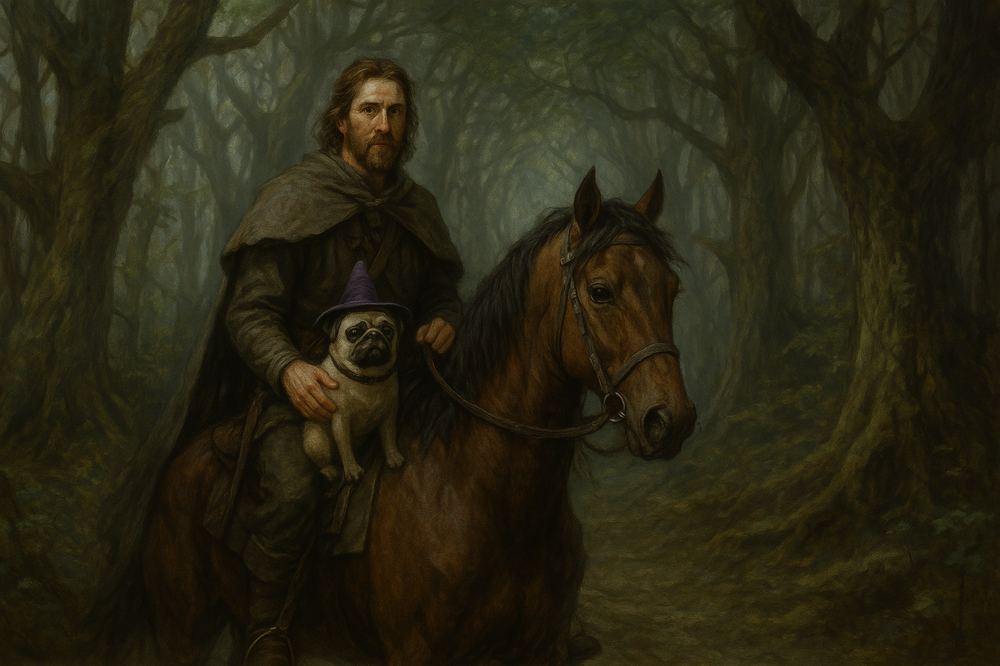

Chapter 1: Mesmerized
Mesmerized

Mesmerized
15048.11.20
朝著夏庭森前進，Brown 和 Mr. Muffins 騎著馬步入了森林內。森林內越走越容易迷路，四處的風景都是一樣的。
餓了、累了，Brown 停下了馬，坐下來休息。
Brown 試圖在森林中尋找能吃的食物，但他突然想到，自己忘了幫馬綁好——才剛買到的馬迅速的脫逃！Brown 跟在後頭，試著將背包內的肉丟出來作為誘餌讓馬停下，卻失敗了。
突然間，一頭野狼迅速地從他身旁跳出，撲到馬身上，但卻沒有咬他，而是趴在暈倒的馬身上，回頭看向 Brown。正當 Brown 感到疑惑時，Mr. Muffins 的聲音出現在他腦海中：「就說了吧，要買頂級的飼料給我！」狼緩緩將外貿幻化回原本的巴哥模樣，Brown 這才確信了自己的猜疑：那天在波馬贊遇到的狼，似乎就是由 Mr. Muffins 變化而成的。
等待著暈倒的馬清醒，Brown 看見 Mr. Muffins 也睡著了。此時，他似乎聽見了一陣歌聲，忽近忽遠。Brown 感到困惑，但他直覺要避開這歌聲。隨著歌聲，他猜測這是來自仙靈的歌聲，有魅惑人心的力量。
Brown 努力抵抗仙靈魔性的歌聲，將暈倒的馬踢醒，抱起睡著的 Mr. Muffins，騎上馬，趕緊朝森林的另一側奔去。
騎了數十分鐘，歌聲終於消失，Brown 這才將馬匹速度放慢，開始尋找附近的食物。在馬上，一眼望去，完全沒有可食用植物的跡象，於是 Brown 決定下馬看看。在馬的腳邊，Brown 看見了紅色、黃色和藍色不同種類的果實。紅色的最大顆，大約像蘋果的大小；黃色的稍微小一點，大約像檸檬一樣；藍色的則最小顆，只有藍莓的大小。Brown 隨意摘取了三顆紅色和黃色的果實，以及十顆藍色的果實。
正當 Brown 準備要將藍色果實放入嘴裡，他聽見了正前方傳來一個中年男子打招呼的聲音。他抬頭，看見一名穿著正裝，面露微笑的男子。男子表示自己叫 Ronald，人們都稱他為魔術師 Ronald（Ronald, the Magician）。Ronald 表示藍色的果實是他種的，可以吃沒問題，而且吃了會感到十分飽足。Brown 吃下一顆，的確，馬上就飽足了。而紅色與黃色的果實，則不是他種的，而是附近農民的產物。
為了表現出自己的善意，Ronald 從他身後拿出一頂魔術師帽，套在了 Mr. Muffins 的頭上，Brown 看了覺得頗為適合，感到十分開心。接著，Brown 向 Ronald 詢問了關於夏庭森的資訊。Ronald 表示夏庭森是個十分無趣的地方，那裡的人都頗為嚴肅，做的事也沒有多好玩，不理解 Brown 為何想去那個地方，但如果 Brown 執意要去，自己願意作為嚮導帶他過去。經過幾番辯論後，Brown 決定還是想去夏庭森看看。
因為 Ronald 似乎對於植物蠻認識的，Brown 試探性的問起 Ronald 看過什麼顏色的花，同時詢問他是否有看過黑色的花。聽見這句話，Ronald 眼睛都亮起來了。Brown 表示他遇過有看過黑色的花的人，Ronald 則希望 Brown 能引薦他認識這個人。他表示有個傳奇般的「黑蓮花」他很想見見。
Brown 對於 Ronald 是否可信抱持著懷疑的態度，他暗示著 Mr. Muffins，想聽聽看他的想法，但 Mr. Muffins 並沒有透過心電感應給他任何回應，Brown 只好藉故將 Mr. Muffins 帶到一旁，確保不讓 Ronald 聽見，再詢問 Mr. Muffins。
經過了各種詢問，Mr. Muffins 卻始終沒有回應 Brown，只是單純的汪汪叫，讓 Brown 不禁懷疑 Mr. Muffins 被下了魔法。
Brown 和 Ronald 於日落時走到了夏庭森。兩人就近找了酒館，Brown 請了 Ronald 餐飲，表達對他帶他來到這裡的感激之情，Ronald 則直接幫 Brown 把今晚住宿的錢給付了。
吃飽後，兩人先簡單回到各自的單人房整理一下。Brown 再次向 Mr. Muffins 確認他到底能否溝通，卻發現 Mr. Muffins 完全無法理解他的意思。失望之餘，Brown 將東西收拾好，便到一樓和 Ronald 見面，兩人決定到街上晃晃。
入夜後的夏庭森，除了剛離開的酒館外，Brown 眼前所見，只有兩處還亮著的店舖，一間一樣是酒館，裡頭喧鬧嘈雜，好不熱鬧，另一間，則是裡面沒有客人的店舖，僅有老闆一人靜靜的待在店內。Brown 看見 Ronald 對這間店似乎有點興趣，追問之下，才發現這間店 Ronald 之前從未見過他營業。
走入店內，老闆熱情的和兩人打招呼。Brown 看見這間店似乎是在賣各種礦石的，在老闆的介紹下，得知除了礦石外，還有各種珍貴的珠寶、鑽石等。除此之外，老闆也帶兩人到了一個角落，拿出他做的雕刻品。
精細的雕工，Brown 沒能認出雕刻的模板是誰，而老闆向他說明這是最近剛過世的國王巴納沃二世，他做了他的小雕像，以茲紀念。Ronald 看了很有興趣，馬上就接手過來，付了錢給老闆。這在 Brown 眼中是非常意外的，他幾乎沒見過 Ronald 對什麼事情這麼有興趣。
在 Brown 的詢問下，老闆表示他沒有製作人形生物以外的雕像，但他花了點時間，翻出了另一個作品—黝黑光滑，摸起來冰冰涼涼的一尊……乍看之下是人形生物，但似乎又不全然是人，Brown 一時難以聯想到任何他見過的生物。仔細一看，到像是個野獸和人的混合體。Brown 拿在手上，覺得好奇，最終也買下了它。
離開前，老闆提醒 Brown，他的狗狗似乎指甲有點長，該注意一下了。「如果你需要幫忙的話，隨時來這裡找我，我叫 Freddy。再見了 Brown。」
回到酒館，雖然時間還早，但此時夏庭森已經沒有其他 Brown 想探索的地方了，於是他便準備就寢。睡前他想起 Freddy 說到 Mr. Muffins 的指甲，於是他試圖幫這頭還無法和他對話的小野獸磨指甲，但是很顯然的，仍然戴著帽子的 Mr. Muffins 瘋狂抗拒。Brown 試圖用繩子將他綁起來，但在意識到 Mr. Muffins 開始啃咬繩子的情況下，為了不讓繩子被咬斷，Brown 只好作罷，明天再試試看。
Brown 仔細研究著手上的小雕像，試著讓它墜落到地上，卻發現它非常堅固，毫無損壞，倒是墜落的聲響大到 Brown 擔心會吵醒其他旅客。把玩一陣子後，Brown 決定先睡了。
15048.11.21
Brown 很肯定那一晚他做了夢，但是他怎麼想都想不起來他夢見了什麼。